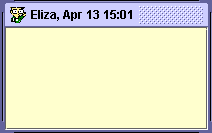
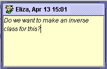
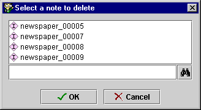

Working With
Notes
Working With
Notes

Protégé-2000 allows you add a "yellow sticky" note to any frame,
that is, a class,
instance, or slot.
This allows you to add notes that are not part of the ontology structure. The
note is always displayed along with the form.
To add a note to a frame:
- Click the Create Note icon
at the top right of the form for the frame (e.g., Class Form,
Instances Form, etc.)
A yellow note is created above the form.

- Click in the note and type the text you want.

- As always, you can resize or reposition the note by dragging.
To remove a note:
- Click the Delete Note icon
at the top right of the form.
- If there is only one note, you will be prompted to confirm the deletion.
Click OK.
- If there is more than one note, a list of notes is displayed.
Select the note you want to delete and click OK.

Next: Classes Table of Contents
Project Table of Contents